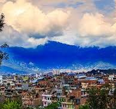

Kathmandu is located in the Bagmati Zone. Kathmandu is the gateway to tourism in Nepal. It is also the nerve center of the country's economy. It has the most advanced infrastructure of any urban area in Nepal, and its economy is focused on tourism, which accounted for 3.8% of Nepal's GDP in 1995–96.
Kathmandu is and has been for many years the centre of Nepal's history, art, culture, and economy. It has a multi-ethnic population within a Hindu and Buddhist majority. Religious and cultural festivities form a major part of the lives of people residing in Kathmandu.